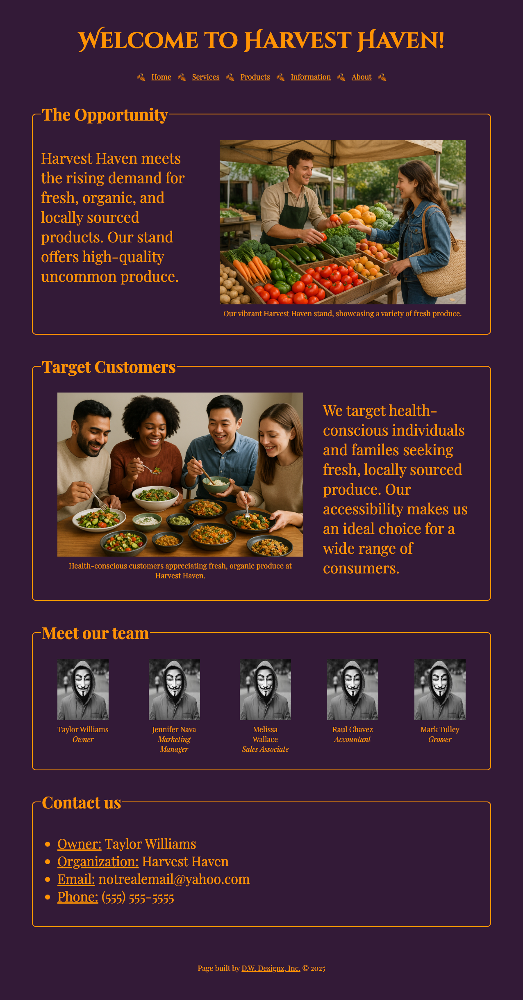

Devin Williams, Harvest Haven
Evaluation
Checklist & Requirements
- The submitted link leads directly to the main client project page to be reviewed.
- File and folder names appear to avoid spaces and upper-case letters; this follows the course convention.
- The page uses a consistent color scheme of deep purple with gold/orange text, giving the site a strong brand identity and good contrast.
- Font size and line spacing make the text readable; headings stand out clearly from body text.
- The site appears to use a single external CSS file for layout, typography, and colors across the project.
- CRAP principles:
- Contrast: Bright orange text and borders stand out well against the dark purple background.
- Repetition: Repeated border style, heading treatment, and color palette help unify the different sections.
- Alignment: Content inside each container is aligned cleanly, and headings/images/text line up consistently.
- Proximity: Related content is grouped into framed sections (Opportunity, Target Customers, Team, Contact), which makes the page easy to scan.
- The page includes a clear header/nav area, a main content section, and a footer with attribution text.
- The large “Welcome to Harvest Haven!” heading works well as the main site heading.
- Navigation links (Home, Services, Products, Information, About) are easy to see and use, and the decorative icons add personality.
- Images of produce and customers strongly support the theme of fresh, local, organic food.
- The contact section clearly lists owner, organization, email, and phone in a bullet list, which is easy for users to find.
Stop / Start / Continue Feedback
- Stop: Avoid leaving large amounts of empty space inside some of the content containers; this can make sections feel stretched and less engaging.
- Start: Consider tightening the vertical spacing so the content fits more within a standard screen height—right now you have to scroll a fair amount to see everything, and the page doesn’t necessarily need to be that tall.
- Continue: Continue using the strong color palette, themed typography, and framed sections—these elements give the site a distinct brand and a cohesive visual style.
Additional Suggestions
Layout & Content
- The layout is mostly alternating image-and-text panels, which is clear but a bit generic. Adding small design variations (icons, subheadings, or callout boxes) could make each section feel more unique.
- The content could be condensed slightly so it spans closer to a regular page height. I had to scroll down a bit to see everything, and it didn’t feel necessary for the amount of information on the page.
- There is quite a bit of empty space inside some of the outlined containers. Reducing padding or adding short supporting details (for example, bullet points of key services or product categories) could make better use of that space.
Imagery
- The produce and customer photos match the Harvest Haven theme really well and help tell the story visually.
- The team photos with masks create a mysterious/fun vibe, but they don’t fully match the warm, friendly feel of a local produce stand. You might consider using more realistic team images or illustrations that support the brand’s welcoming tone.
Overall Notes
- Overall, the site communicates the concept of Harvest Haven clearly and has a strong, memorable visual identity. With a bit of tightening of layout and spacing, it could feel even more polished and user-friendly.